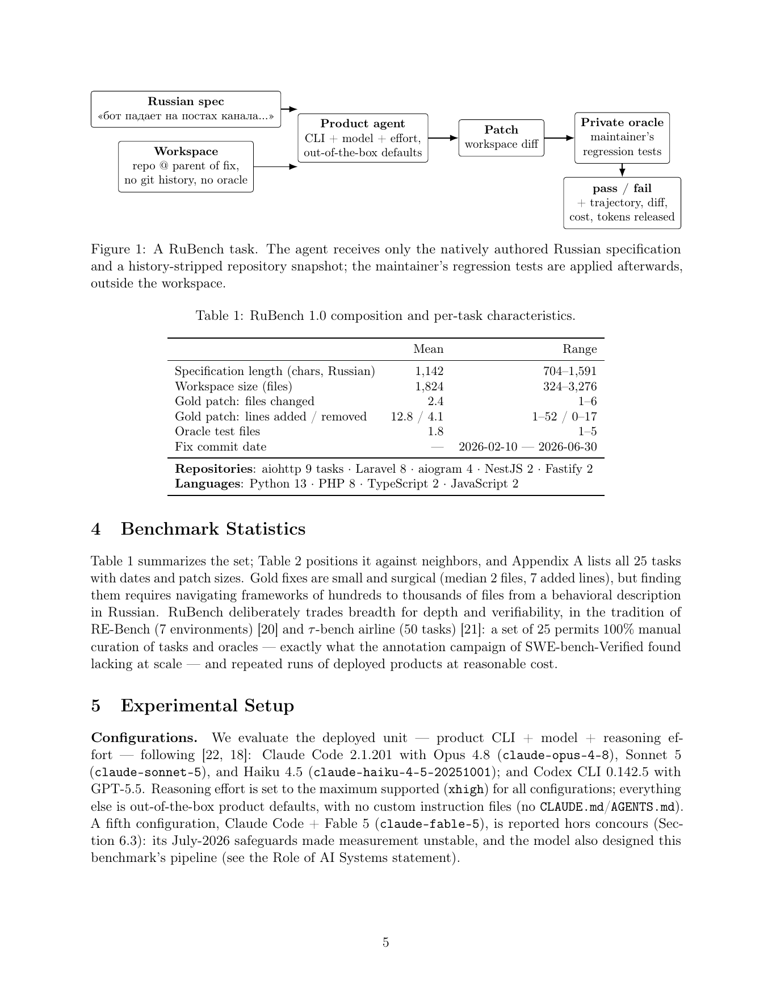
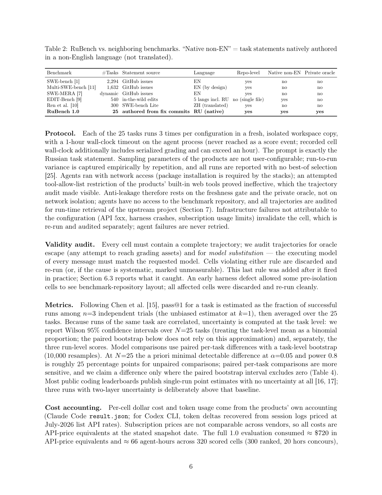
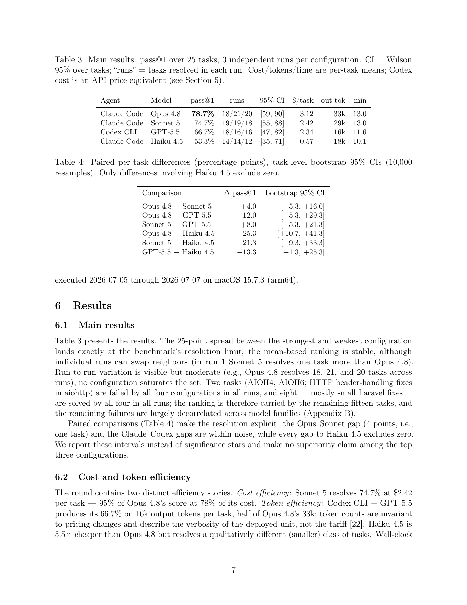
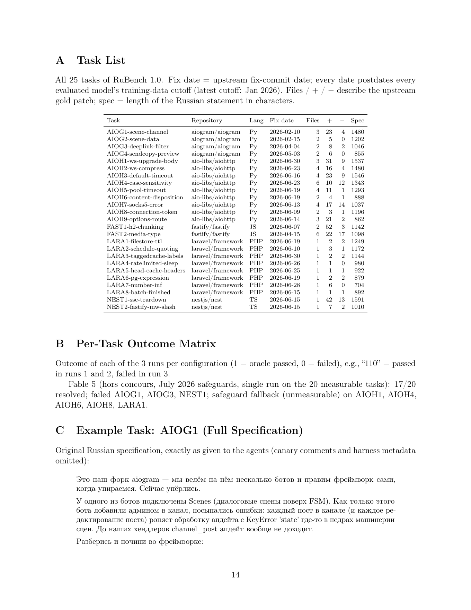
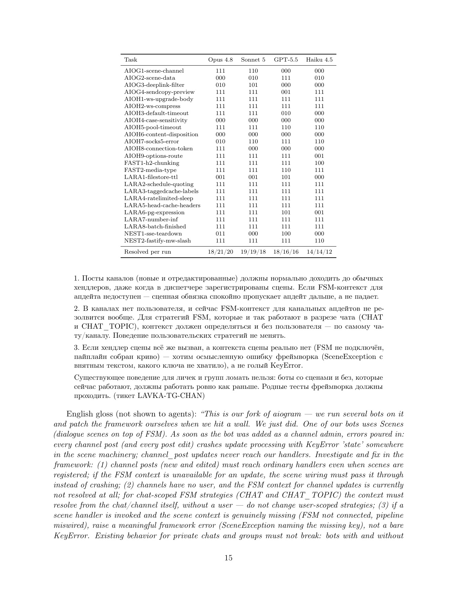
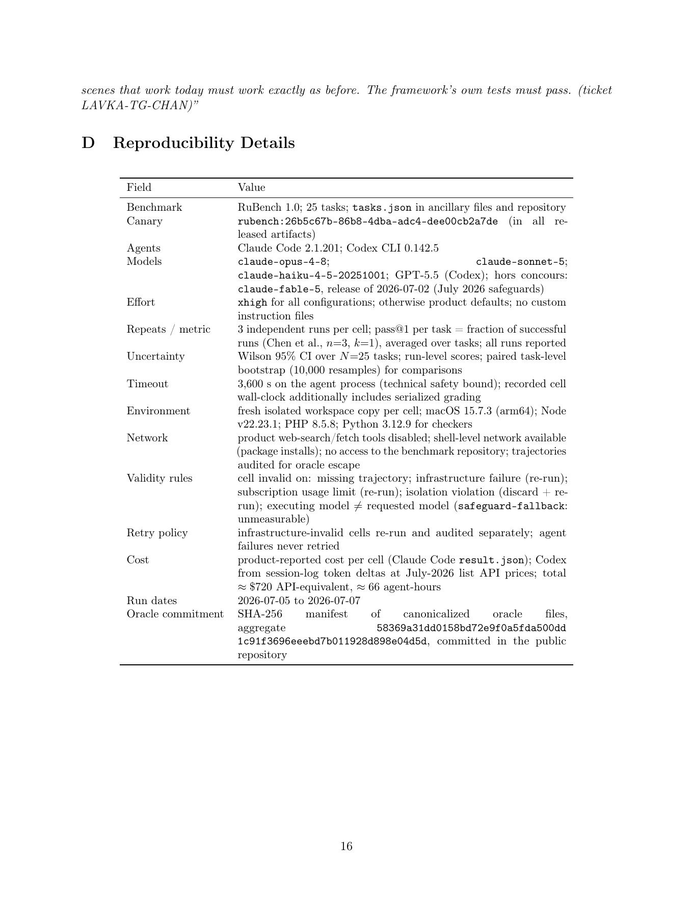

AI / Agent 晨间简报
生成日期：2026-07-08（周三）｜信息截止时间：2026-07-08 15:29:42 CST (UTC+0800)｜主题：repository-level coding agent benchmark、原生非英语任务、GitHub Agent Skill / MCP 工具链、OpenAI / Anthropic 官方动态
1. 今日论文
选择理由：RuBench 于 2026-07-07 提交，直接面向 repository-level agentic coding evaluation，且把“原生非英语客户式需求 + 产品级 CLI agent + 私有 oracle + 可审计轨迹”放在同一套评测里。它补上了 SWE-bench 系列和翻译式 multilingual benchmark 没覆盖的真实使用场景。
RuBench: A Repository-Level Agentic Coding Benchmark with Natively Authored Russian Task Specifications
- 作者：Evgeny Shilov
- 发布日期：2026-07-07（arXiv citation_date 2026/07/07）
- 论文链接：arXiv:2607.06411；PDF
- 代码 / 项目页：GitHub: eugeneshilow/rubench；项目页
English overview
RuBench introduces a repository-level coding-agent benchmark built from real fixes in live open-source repositories, but with task specifications written natively in Russian rather than translated from English issues. Each task gives the agent only a Russian customer-style request and a history-stripped repository snapshot; the maintainer regression tests are withheld and applied afterwards as a private oracle. The benchmark evaluates deployed product configurations rather than separating model and harness: Claude Code with Opus 4.8, Sonnet 5, and Haiku 4.5, plus Codex CLI with GPT-5.5.
The 1.0 release contains 25 tasks from aiohttp, Laravel, aiogram, NestJS, and Fastify, all fixed between February and June 2026. The best point estimate is Claude Code + Opus 4.8 at 78.7% pass@1, followed by Sonnet 5 at 74.7% and Codex CLI + GPT-5.5 at 66.7%. The paper is careful about small-N uncertainty: with only 25 tasks, the top-three ordering is not a settled superiority claim, and only comparisons against Haiku 4.5 exclude zero. The most interesting validity finding is a safeguard fallback issue where a Fable 5 product configuration silently switched execution to Opus 4.8 on 20% of tasks, making “which model actually ran” an empirical question for agent benchmarks.
对应中文翻译
RuBench 提出一个 repository-level coding agent benchmark，任务来自真实开源仓库中的修复，但任务规格不是从英文 issue 翻译而来，而是用俄语原生撰写。每个任务只给 agent 一个类似客户请求的俄语说明，以及去掉 git 历史的仓库快照；维护者的回归测试被隐藏，并在 agent 运行后作为私有 oracle 判分。评测对象不是拆开的“模型”和“框架”，而是部署后的产品配置：Claude Code + Opus 4.8 / Sonnet 5 / Haiku 4.5，以及 Codex CLI + GPT-5.5。
1.0 版本包含来自 aiohttp、Laravel、aiogram、NestJS、Fastify 的 25 个任务，修复时间均在 2026 年 2 月到 6 月之间。最佳点估计是 Claude Code + Opus 4.8，pass@1 为 78.7%；Sonnet 5 为 74.7%，Codex CLI + GPT-5.5 为 66.7%。论文对小样本不确定性很谨慎：因为只有 25 个任务，前三名排序不能被视为确定优劣，只有与 Haiku 4.5 的差距排除了零。最有意思的有效性发现是 Fable 5 产品配置存在 safeguard fallback：20% 任务中实际执行被静默切到 Opus 4.8，因此 agent benchmark 必须审计“实际跑的是哪个模型”。
核心方法、创新点、实验结论与局限
- 方法：从 2026 年真实 fix commit 挖掘任务，去除仓库历史和 oracle tests，用俄语原生规格驱动产品级 CLI agent，再用私有回归测试判分并公开轨迹、diff、成本与 token 记录。
- 创新：第一个把 repo-level agent、原生非英语任务、私有 oracle 和模型替换审计结合起来的 benchmark；强调评测部署产品配置，而不是只评测裸模型。
- 结论：Opus 4.8 点估计最高 78.7%，Sonnet 5 74.7%，Codex CLI + GPT-5.5 66.7%，Haiku 4.5 53.3%；Codex 的 token output 约 16k/任务，约为 Opus 4.8 的一半。
- 局限：N=25 很小，约 25 个百分点才有较强分辨率；任务集中在俄语与少数仓库/语言；网络开放使 upstream 查询成为可审计但无法完全禁止的变量；benchmark 构建过程也使用了 Claude agentic sessions，作者用私有可执行 oracle 和公开轨迹来降低风险。
关键表格转写
Table 1：RuBench 1.0 composition
| Metric | Mean | Range / Notes |
|---|---|---|
| Specification length (chars, Russian) | 1,142 | 704-1,591 |
| Workspace size (files) | 1,824 | 324-3,276 |
| Gold patch: files changed | 2.4 | 1-6 |
| Gold patch: lines added / removed | 12.8 / 4.1 | 1-52 / 0-17 |
| Oracle test files | 1.8 | 1-5 |
| Fix commit date | - | 2026-02-10 to 2026-06-30 |
| Repositories | aiohttp 9 tasks; Laravel 8; aiogram 4; NestJS 2; Fastify 2 | |
| Languages | Python 13; PHP 8; TypeScript 2; JavaScript 2 | |
Table 3：Main results
| Agent | Model | pass@1 | Runs | 95% CI | $/task | Output tokens | Minutes |
|---|---|---|---|---|---|---|---|
| Claude Code | Opus 4.8 | 78.7% | 18/21/20 | [59, 90] | 3.12 | 33k | 13.0 |
| Claude Code | Sonnet 5 | 74.7% | 19/19/18 | [55, 88] | 2.42 | 29k | 13.0 |
| Codex CLI | GPT-5.5 | 66.7% | 18/16/16 | [47, 82] | 2.34 | 16k | 11.6 |
| Claude Code | Haiku 4.5 | 53.3% | 14/14/12 | [35, 71] | 0.57 | 18k | 10.1 |
论文公开图表全量索引
正文可提取到 1 张有编号图（Figure 1）和 4 张有编号表（Table 1-4）；附录还包含 3 个未编号但表格化的数据块：Task List、Per-Task Outcome Matrix、Reproducibility Details。以下按 PDF 顺序全部附上。






2. GitHub 三日增长项目
排名方法：本次没有正好 72 小时前的同口径快照；采用 2026-07-06 日报快照到 2026-07-08 14:35 CST 当前值的差分，窗口约 47 小时，是透明代理指标，不等同严格三日新增。
| 项目 | 用途简介 | 语言 | 最近更新时间 | 当前 stars | 2026-07-06 快照 | 短窗新增 |
|---|---|---|---|---|---|---|
| firecrawl/firecrawl | 面向 agent/RAG 的网页搜索、抓取、结构化提取与交互 API。 | TypeScript | 2026-07-08 06:35:37 UTC | 147,403 | 145,375 | +2,028 |
| obra/superpowers | Agentic skills framework 与软件开发方法论，围绕 skill 驱动的软件工程协作。 | Shell | 2026-07-08 06:35:34 UTC | 249,061 | 247,197 | +1,864 |
| NousResearch/hermes-agent | Nous 的自成长 agent 项目，关注持续运行中的能力与记忆增长。 | Python | 2026-07-08 06:35:24 UTC | 211,158 | 209,894 | +1,264 |
| multica-ai/andrej-karpathy-skills | 从 Karpathy 观察提炼的 CLAUDE.md/agent 行为改进配置。 | 未标明 | 2026-07-08 06:34:48 UTC | 189,196 | 188,185 | +1,011 |
| farion1231/cc-switch | 跨平台桌面助手，用于 Claude Code、Codex、OpenCode、OpenClaw 等 agent 切换与调度。 | Rust | 2026-07-08 06:35:19 UTC | 114,523 | 113,676 | +847 |
3. GitHub 高 Star 未总结项目
筛选与排除：检查了当前工作区 12 份 morning-brief*.html；凡此前 GitHub 板块、候选快照或已总结集合中出现过的仓库均排除。以下 5 个项目按当前总 stars 降序排列。
| 项目 | 用途与核心能力 | 为什么值得关注 | 语言 | 最近更新时间 | 当前 stars |
|---|---|---|---|---|---|
| bytedance/UI-TARS-desktop | 开源多模态 AI agent stack，连接 GUI agent 模型、桌面/浏览器操作与 agent infra。 | 它直接覆盖 computer-use / GUI agent 运行时，是从 browser-use 走向完整桌面 agent stack 的重要样本。 | TypeScript | 2026-07-08 06:01:11 UTC | 37,789 |
| microsoft/playwright-mcp | 把 Playwright 浏览器自动化暴露为 MCP server。 | 它是 MCP + browser automation 的高关注基础设施，适合 coding agent 和 web agent 做可验证操作。 | TypeScript | 2026-07-08 06:33:49 UTC | 34,822 |
| continuedev/continue | 开源 coding agent / AI code assistant，覆盖 IDE 与开发工作流。 | 它代表开源 coding agent 在开发者工具中的产品化落地，并且与闭源 Codex/Claude Code 形成对照。 | TypeScript | 2026-07-08 03:37:52 UTC | 34,732 |
| ComposioHQ/composio | 为 agents 提供 1000+ toolkits、tool search、认证、上下文管理和沙盒 workbench。 | 工具调用、鉴权与沙盒是 agent 工具链的硬问题，Composio 是这个层面的高 star 工程项目。 | TypeScript | 2026-07-08 06:32:26 UTC | 29,134 |
| openai/openai-agents-python | OpenAI 官方轻量、多智能体 workflow 框架。 | 它是 OpenAI 生态下构建多 agent workflow 的核心开源 SDK，值得和 LangGraph、Semantic Kernel 等对比。 | Python | 2026-07-08 05:25:26 UTC | 27,728 |
4. OpenAI / Anthropic 动态
OpenAI
- Australian Payments Plus moves faster with ChatGPT and Codex（2026-07-07，官方客户案例）：AP+ 描述如何把 ChatGPT Enterprise 和 Codex 用于产品与工程协作。它不是模型/SDK 发布，但对你的 Codex/coding-agent 观察有用，因为它展示了 Codex 在金融基础设施公司中的生产使用方式。
本地直接抓取 OpenAI 页面返回 403；链接与标题由官方搜索/浏览结果核验。
Anthropic
- The Making of Claude Code（2026-07-06，Feature / video）：Anthropic 官方 Claude Code 制作幕后内容，关注产品级 coding agent 的设计与构建过程。
- Government of Alberta uses Claude to find and fix cybersecurity vulnerabilities across government systems（2026-07-06，Case Study）：Alberta 使用 Claude Code 扫描与修复政府系统安全漏洞；对“coding agent + 安全审查/修复”场景有参考价值。
5. 来源与方法
主要来源
- 论文：arXiv abstract；PDF；GitHub repository；项目页。
- GitHub：GitHub REST API
https://api.github.com/repos/<owner>/<repo>，查询时间 2026-07-08 14:35 CST；历史基线来自 2026-07-06 日报。 - OpenAI 官方：OpenAI News；AP+ / Codex case study。
- Anthropic 官方：Anthropic News；The Making of Claude Code；Alberta cybersecurity case study。
数据限制与不确定性
- GitHub stars 为查询时实时值；本次增长榜采用约 47 小时差分代理，未声称严格三日新增。
- OpenAI 页面本地
curl返回 403，因此只使用官方搜索/浏览可核验的标题和链接，不引用不可见正文细节。 - RuBench 正文有编号图表为 1 张图 + 4 张表；附录中的未编号表格化数据也已附上截图。表格关键数值由 PDF 渲染页人工转写。
- 今天是周三，周六周报板块按规则完全省略。工作区未发现 2026-07-07 日报文件，因此官方动态窗口按 2026-07-06 报告后至本次截止时间处理。
GitHub star 快照：增长候选
| 仓库 | 当前 stars | 历史快照 | 短窗新增 | 语言 |
|---|---|---|---|---|
| obra/superpowers | 249,061 | 247,197 | +1,864 | Shell |
| firecrawl/firecrawl | 147,403 | 145,375 | +2,028 | TypeScript |
| NousResearch/hermes-agent | 211,158 | 209,894 | +1,264 | Python |
| multica-ai/andrej-karpathy-skills | 189,196 | 188,185 | +1,011 | 未标明 |
| farion1231/cc-switch | 114,523 | 113,676 | +847 | Rust |
| affaan-m/ECC | 227,157 | 226,422 | +735 | JavaScript |
| anomalyco/opencode | 183,475 | 182,775 | +700 | TypeScript |
| anthropics/skills | 159,275 | 158,547 | +728 | Python |
| anthropics/claude-code | 136,766 | 136,422 | +344 | Python |
| browser-use/browser-use | 103,402 | 102,999 | +403 | Python |
GitHub star 快照：高 Star 候选与排除
| 仓库 | 当前 stars | 语言 | 处理 |
|---|---|---|---|
| bytedance/UI-TARS-desktop | 37,789 | TypeScript | 入选 |
| microsoft/playwright-mcp | 34,822 | TypeScript | 入选 |
| continuedev/continue | 34,732 | TypeScript | 入选 |
| ComposioHQ/composio | 29,134 | TypeScript | 入选 |
| openai/openai-agents-python | 27,728 | Python | 入选 |
| modelcontextprotocol/python-sdk | 23,558 | Python | 候补 |
| Skyvern-AI/skyvern | 22,152 | Python | 候补 |
| microsoft/magentic-ui | 9,943 | Python | 候补 |
| lastmile-ai/mcp-agent | 8,412 | Python | 候补 |
本次新增至“已总结仓库集合”的仓库
firecrawl/firecrawl, obra/superpowers, NousResearch/hermes-agent, multica-ai/andrej-karpathy-skills, farion1231/cc-switch, bytedance/UI-TARS-desktop, microsoft/playwright-mcp, continuedev/continue, ComposioHQ/composio, openai/openai-agents-python。
归档与发布状态
已成功生成本地 HTML、归档副本、index.html 与概览 SVG；归档仓库已提交并推送到 GitHub main，GitHub Pages 已触发更新。若公开站点短时间仍显示旧内容，通常是 GitHub Pages 缓存或构建延迟。